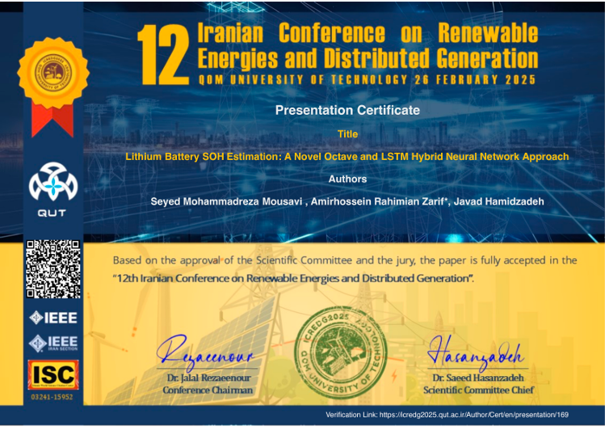
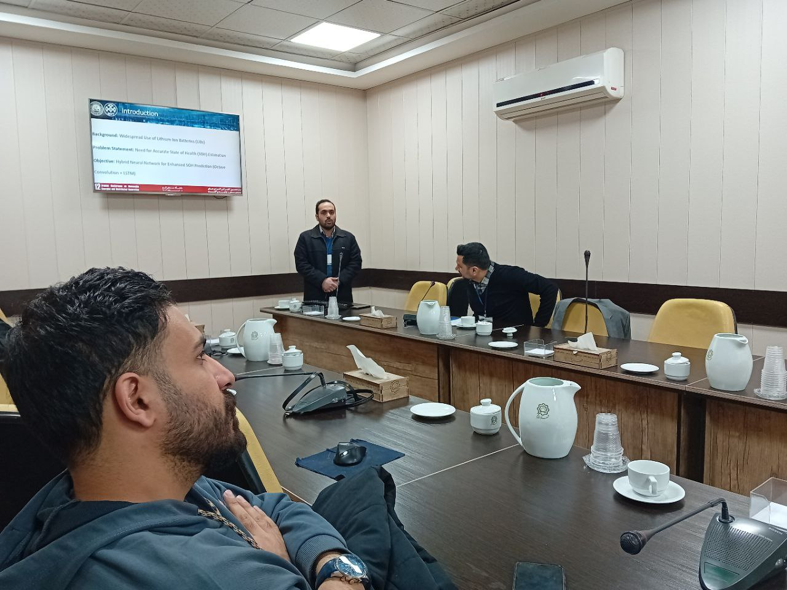
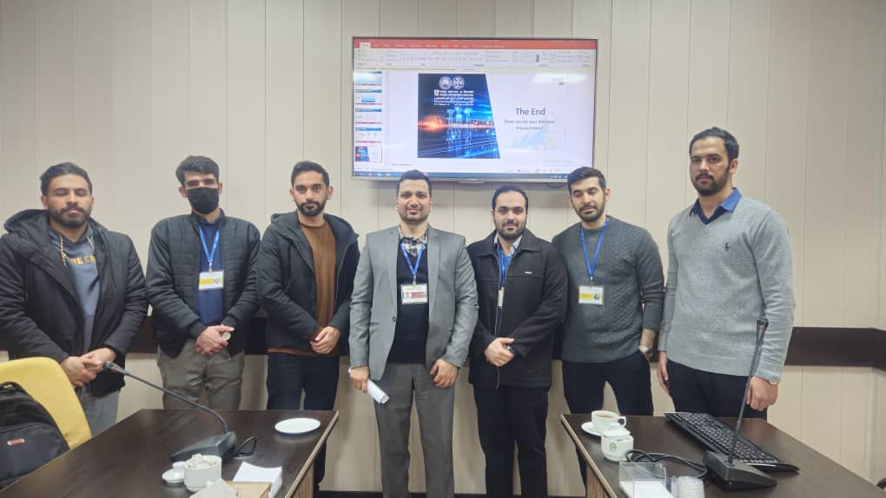

Biography
Hi! My name is Seyed Mohammadreza Mousavi, and I am a University Lecturer at Sadjad Industrial University of Mashhad, where I teach courses on Python programming, IoT systems, and foundations of computer engineering.
Alongside my academic work, I am currently part of the Camera Calibration Team at Software Motion, where I focus on SLAM-based calibration, ROS integration, and fisheye surround-view camera systems.
Before this, I was a member of the Perception Team at Software Motion, where I led and contributed to projects involving real-time object detection, deep learning-based tracking, and multi-camera integration. My work has spanned from academic research to hands-on development of intelligent visual perception systems used in industrial and robotics applications.
My research interests include computer vision, deep learning, SLAM, and 3D scene understanding. I enjoy designing systems that combine robust geometry with modern learning techniques, and I’m especially passionate about turning complex AI pipelines into intuitive and interpretable tools. Outside of work, you can find me exploring visual technology, teaching students, or geeking out about the latest in perception and robotics.
Research Interests
- Computer Vision: Image processing, object detection, object classification, segmentation
- Machine Learning & Deep Learning: Representation learning, CNNs, RNNs, Transformer-based models
- Reinforcement Learning: Applied to robotics and control tasks
- Natural Language Processing: Sequence modeling, text understanding
- Robotics & Navigation: SLAM, sensor fusion, perception in autonomous systems
Education
Sadjad University of Technology, Mashhad, Iran
M.Sc. in Artificial Intelligence, 2017–2020
Supervisor: Dr. Amir Bavafa Toosi
Thesis: Development of English handwritten recognition using Deep Neural Network
Thesis Grade: 18.5/20; Ranked second in top 5% of class
Islamic Azad University of Mashhad, Mashhad, Iran
B.Sc. in Computer Engineering – Hardware, 2012–2016
Supervisor: Dr. Farzaneh Kimiaei
Thesis: Developing AVR programming for automation
Thesis Grade: 20/20; Ranked first in class
Research Highlights
Lithium Battery State of Health Estimation: A Novel Octave and LSTM Hybrid Neural Network Approach
Abstract: The lithium battery (LIB) has emerged as a prominent area of research in energy and industrial applications, due to its superior energy density and efficient energy delivery capabilities. This study addresses the critical requirement for accurate State of Health (SOH) estimation as a significant challenge. The primary objective of this study is to utilize key battery health characteristic parameters to improve the accuracy and computational speed of SOH. Significant gaps have been identified in recent methodologies, particularly in terms of SOH estimation accuracy, computational speed, and simulation parameters. To address these limitations, a novel hybrid neural network (NN) approach is proposed, integrating octave convolution (OCT) and long short-term memory (LSTM). To demonstrate the effectiveness of the proposed method in the optimization process, a comparative analysis is conducted against Convolutional Neural Networks (CNN), OCT, LSTM, and CNN-LSTM architectures. The results indicate a significant reduction in the mean squared error (MSE), decreasing from 80.21 percent in CNN to 0.0758 percent in the proposed OCT-LSTM model. Furthermore, the root mean square error (RMSE) exhibits a substantial reduction of 64.91 percent and 58.14 percent compared to the LSTM and CNN-LSTM models, respectively. The simulation parameters used in this study were reduced from 41,228 for the CNN-LSTM model to 38,668 for the OCT-LSTM model. Empirical results show that the proposed method outperforms state-of-the-art methods in the number of parameters, MSE, RMSE, and estimation accuracy. These findings highlight the method's enhanced efficiency, computational speed, and precision, emphasizing its potential as a significant advancement in this domain.

Graphical abstract of the proposed OCT-LSTM method
Publications
GCOCR: A Method for Recognition of Characters Using Gated Convolutional and Recurrent Networks
Authors: S. M. Mousavi, A. B. Toosi
Journal: Journal of Soft Computing and Information Technology (2024)
Lithium Battery SOH Estimation: A Novel Octave and LSTM Hybrid Neural Network Approach
Authors: S. M. Mousavi, A. Rahimian Zariv, J. Hamidzadeh
Conference: 12th Iranian Conference on Renewable Energies and Distributed Generation (ICREDG 2025)
GCRCR: Gated Convolutional and Recurrent Character Recognition
Authors: S. M. Mousavi, A. B. Toosi
Status: Submitted to IJDAR (2025)
A hybrid method for generating markers to improve the image segmentation of the watershed algorithm
Authors: S. B. Hossaini, S. M. Mousavi, A. B. Toosi
Status: Submitted to Tabriz Journal of Electrical Engineering
External Profiles
🔗 Google Scholar
💼 LinkedIn
💻 GitHub
Honors & Awards
- 🥇 Ranked First in B.Sc. class, Islamic Azad University of Mashhad (2016)
- 🏅 Ranked Second among top 2% of M.Sc. class, Sadjad University of Technology (2020)
- 📘 M.Sc. Thesis scored 18.5/20 – English Handwritten Recognition using Deep Neural Networks
- 🎖️ Recognized for outstanding contribution to Camera Calibration and SLAM Software Systems at Software Motion (2024)
🏅 Top Lecturer Award – Computer Science Department
Institution: Sadjad Industrial University
Date: March 2025
Received the Excellence in Teaching and Research Award for my contributions in teaching, research, and mentorship in the Computer Science and IT Department. This recognition celebrates my commitment to advancing academic excellence in AI, machine learning, and computer vision.
Certificates
IEEE Certificate – 12th Iranian Conference on Renewable Energies and Distributed Generation
Presented at the 12th Iranian Conference on Renewable Energies and Distributed Generation at Qom University of Technology (Feb 2025), our paper on Lithium Battery SOH Estimation using a Hybrid Octave and LSTM Network was officially accepted. The presentation was honored with an IEEE-recognized certificate. The event was a great platform to share insights on battery health estimation and deep learning-based energy applications.


